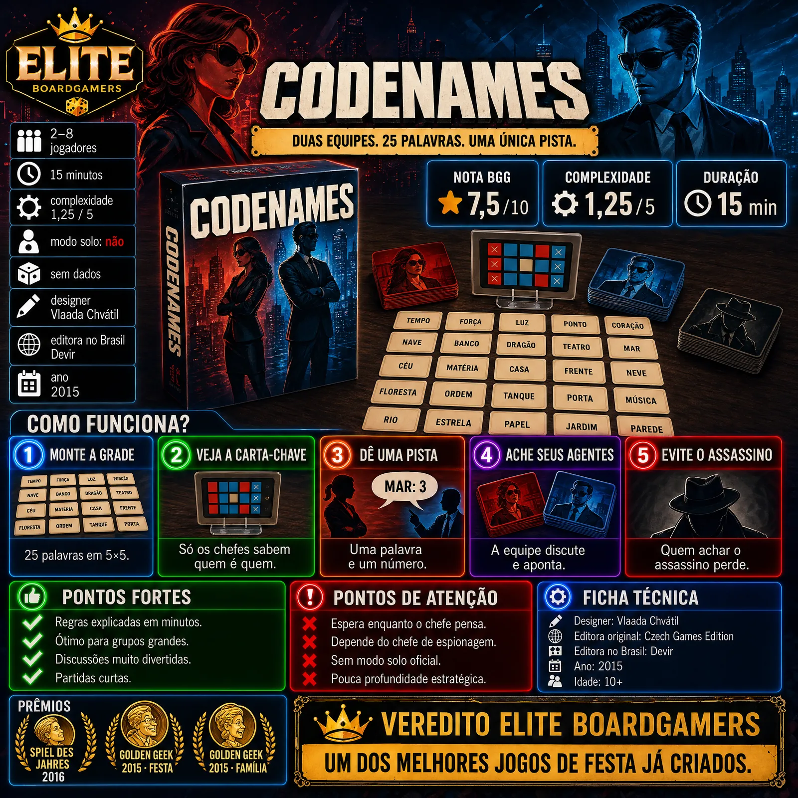

Codenames, lançado no Brasil como Código Secreto, é um jogo de associação de palavras em equipes que virou referência entre os jogos de festa. Venceu o Spiel des Jahres em 2016 e os Golden Geek de Família e de Festa em 2015.

| Ano | 2015 |
|---|---|
| Designer | Vlaada Chvátil |
| Editora original | Czech Games Edition |
| Editora no Brasil | Devir (Código Secreto) |
| Jogadores | 2 a 8 segundo o BGG; 4 ou mais segundo a Wikipedia (6 recomendado) |
| Duração anunciada | 15 minutos (15 a 30 segundo a Wikipedia) |
| Idade | 10+ |
| Nota BGG | 7,5 / 10 (cerca de 106 mil avaliações) |
| Peso BGG | 1,25 / 5 |
| Nota Ludopedia | não confirmado nas fontes consultadas |
| Modo solo oficial | Não |
| Grade | 25 cartas de palavras em 5×5, com uma carta-chave secreta |
Números do BoardGameGeek obtidos por busca, porque o site bloqueia acesso automatizado.
Duas equipes, vermelha e azul. Na mesa ficam 25 cartas com palavras em uma grade 5×5. Cada equipe tem um chefe de espionagem, que vê a carta-chave secreta: ela mostra quais palavras são agentes de cada equipe, quais são civis e qual é o assassino.
Na sua vez, o chefe dá uma pista de uma única palavra e um número, dizendo quantas palavras da grade se ligam à pista. A equipe discute e aponta palavras uma a uma: acertar permite continuar; errar passa a vez ou entrega um agente ao adversário.
Vence a equipe que encontrar primeiro todos os seus agentes. Quem apontar o assassino perde na hora.
Uma pista, um número, uma grade: é por isso que o jogo funciona com quem nunca jogou nada moderno.
A Wikipedia registra de 4 a 8 jogadores ou mais, com 6 recomendado; as equipes crescem sem mudar a regra.
Debater o que o chefe quis dizer é o coração do jogo, e cada grade nova cria associações diferentes.
Cerca de 15 minutos por partida, o que faz o grupo pedir revanche.
Várias resenhas apontam o tempo parado enquanto o chefe monta a pista; a Unboxed sugere usar a ampulheta para limitar a espera.
A Roll to Review nota que, se o chefe trava, a partida inteira perde o ritmo.
Não há modo solo oficial, e a experiência melhora com mais gente.
É um jogo de festa: a graça está na conversa, não em planejamento de longo prazo.
Codenames transforma uma ideia simples em discussões memoráveis e virou referência em jogos de festa. A espera enquanto o chefe pensa e a dependência do grupo pesam, mas para encontros é um dos melhores jogos já feitos.
Um dos melhores jogos de festa já criados.